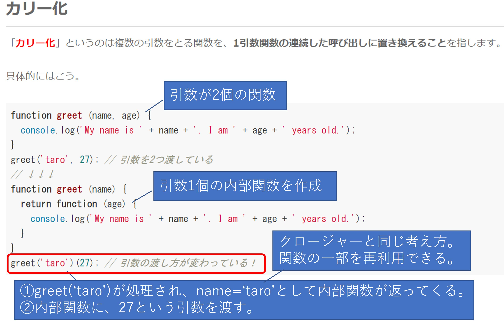
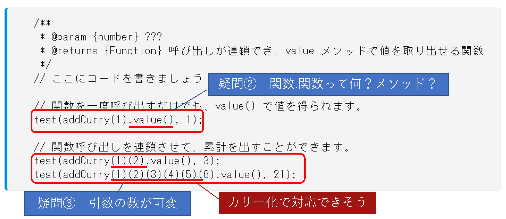
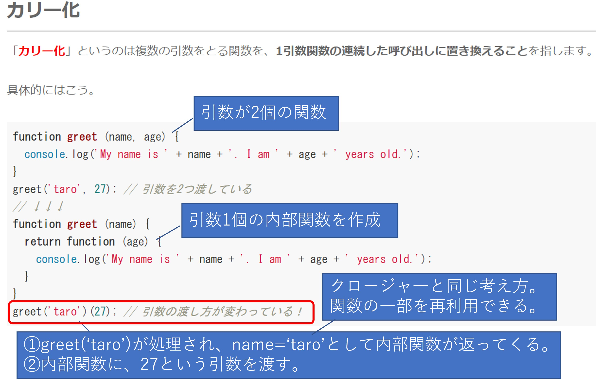
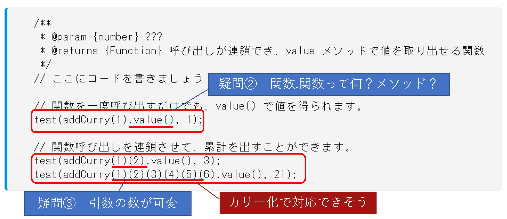
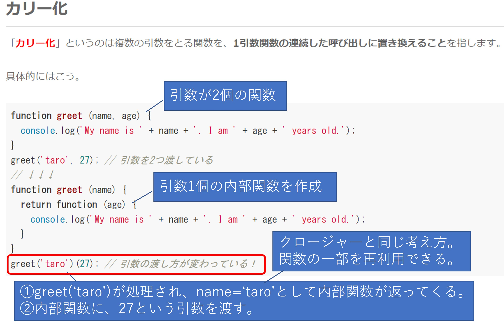
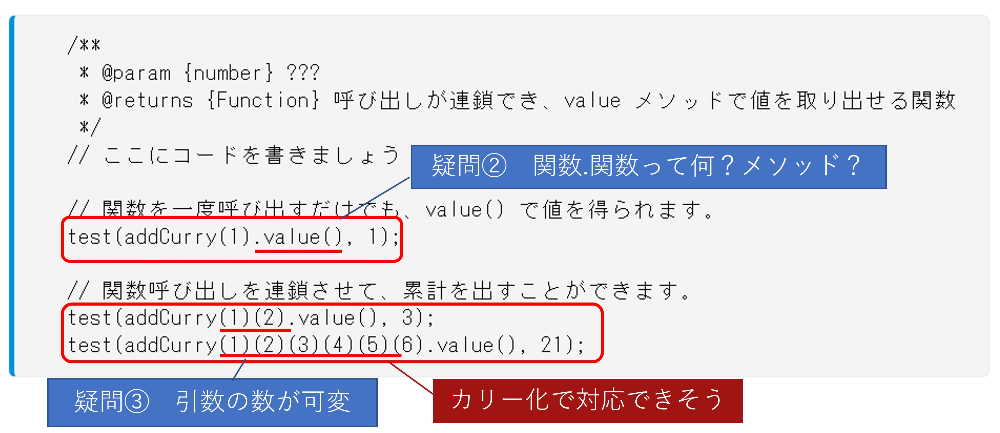
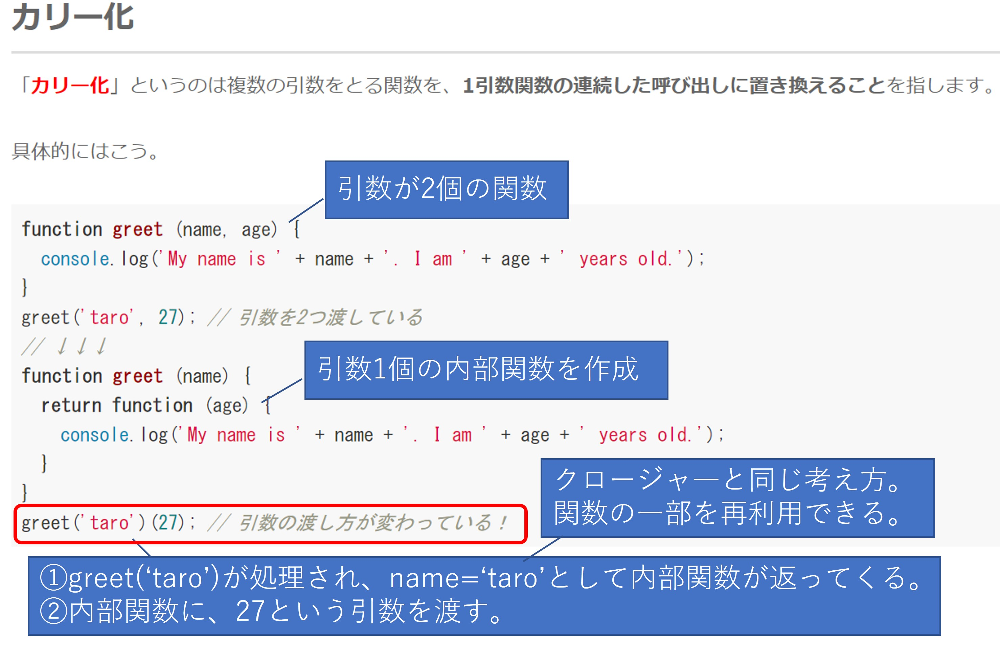
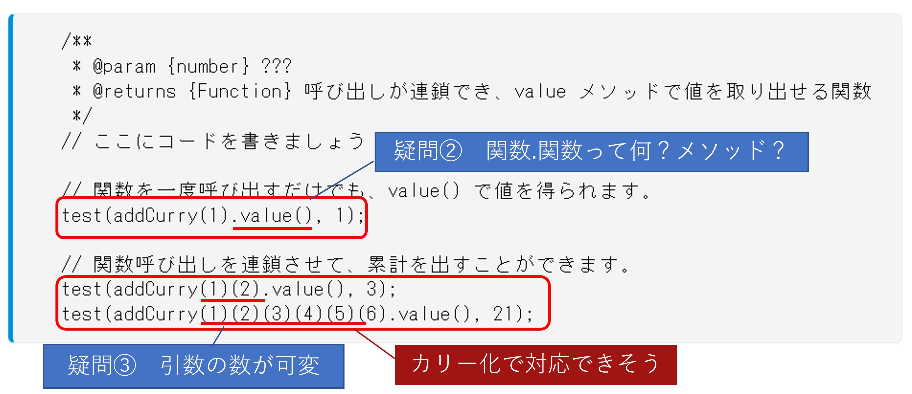

DIG プログラミング基礎 Presentation
報告者：電動パワトレ制御機能開発部 森厚平
Agenda
- 学んだ事
- 深掘りした事
- まとめ
学んだ事
講義の中で特に印象深く重要と考えている事
- インポスターシンドローム
- エラーと友達


Javascriptに限らず、他の言語を学ぶ時や、ソフトウェアに限らず、技術者として本当に重要な考え方だと感じてます。
深掘りした事
クロージャー、カリー化
ナイトメア問題にかなり苦労したので、その部分を深掘りしました。ネタバレが若干含まれますので、ご注意下さい
 





ナイトメア問題にかなり苦労したので、その部分を深掘りしました。ネタバレが若干含まれますので、ご注意下さい



